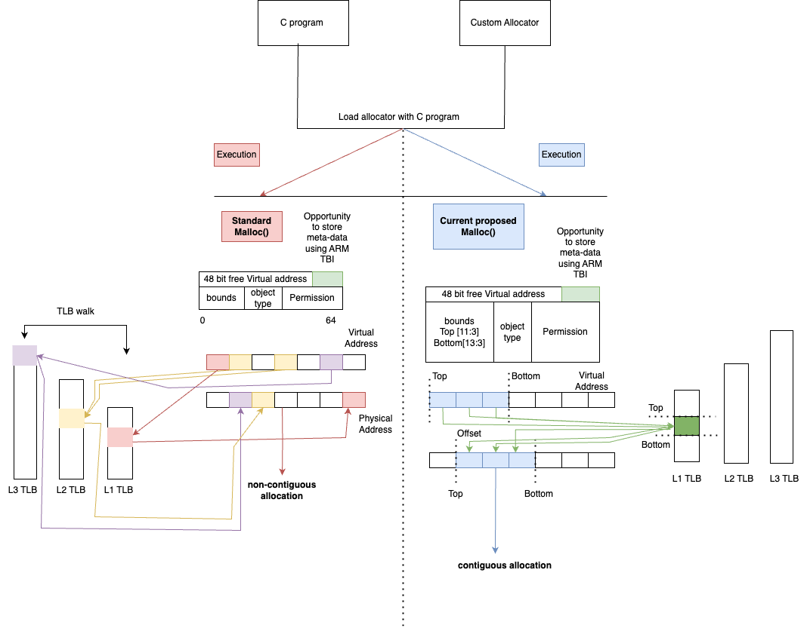
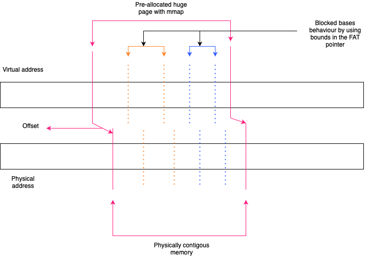
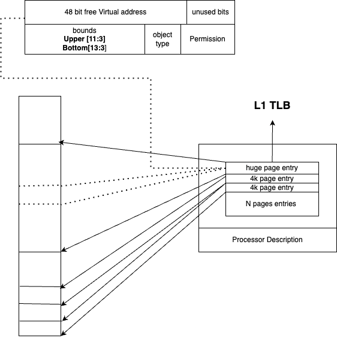

Table of Contents
1. Fat-pointer Address Translations
Fat-pointer Address Translations, combined with the capabilities of the CHERI (Capability Hardware Enhanced RISC Instructions) architecture, introduce robust memory safety and security features by incorporating additional metadata with memory pointers. This enhanced architecture utilizes concepts such as FlexPointer, Range Memory Mapping (RMM) to manage memory effectively.
Range addresses play a pivotal role within this implementation, defining memory regions bounded by a starting address (Upper) and an ending address (Lower). These range addresses are encoded within FAT-pointers, allowing for precise control over memory regions.

Figure 1: High overview architecture
Figure 1 illustrates the methodology employed to leverage the CHERI 128-bit FAT-pointer scheme for facilitating block-based memory management on physically contiguous memory,which is depicted on the right side of the figure. This technique contrasts with the conventional mmap approach.
In figure 1, the green-highlighted section marks the unused space between the 48th and 64th bits within the FAT-pointer. This area of unused bits presents an opportunity to store additional metadata, potentially enhancing the capabilities of the memory management system. Here we explore how using Huge pages with CHERI bounds can reduce the number of TLB entries required.
The functionality of ranges encompasses several key aspects:
1.1. Encoding Ranges as Bounds to the Pointer

Figure 2: Range of memory
Integrating range bounds directly into FAT-pointers enables the architecture to enforce memory access restrictions at the pointer level thus allowing tracking of memory ranges on a pointer level. In this implementation, memory ranges are established using bounds encoded within the FAT-pointer, adhering to the CHERI 128-bit bounds compression scheme\cite{woodruff_cheri_2019}.
Figure 2 illustrates a straightforward use-case in which the dark pink line represents a single, large contiguous memory area, or huge page. Within this huge page, the orange and blue lines indicate two separate memory allocations equivalent to invoking malloc twice to allocate memory in distinct regions. This scenario simulates a block-based memory allocator operating within the confines of the huge page. The allocations leverage the bounds encoded in the FAT-pointer, ensuring tracking and efficient management of the allocated memory regions. By using the FAT-pointer bounds, this method maintains the integrity and contiguity of the allocated blocks within the huge page.
1.2. Instrumenting Block-Based Allocators with Physically Contiguous Memory

Figure 3: Fat-pointer Address Translations using huge pages
hierarchical structures, to translate virtual addresses to physical addresses. This approach requires multiple entries to handle various memory segments, leading to increased overhead and complexity in address translation. Conversely, the current approach stream- lines this process by using a single TLB entry to translate multiple addresses within a contiguous memory range. This reduces the number of required TLB entries, simplifying the translation process and improving efficiency. By consolidating address translations into a single TLB entry, this method minimizes the overhead associated with managing numerous TLB entries and leverages the bounds encoded within the FAT-pointer for efficient memory tracking and access. This approach allows for precise and efficient memory management within the allocated huge page.
Figure 3 illustrates a use-case of huge pages where the green line represents a sample access to read within a contigous space of physical memory. The dotted lines represents the bounds for that particular pointer access. Using bounds stored on the pointer a block based pattern can be reprecated on physically contigous memory.
1.3. Implementation
#+BEGINCOMMENT The software stack is based on CHERIBSD, selected because ARM officially supports Morello's performance counters on this operating system. The setup includes a C program that is linked to the prototype memory allocator or to various memory allocators being benchmarked. This linkage can occur in two ways: either as a shared object file during compile time for larger allocators, or as a header file for smaller allocators, ensuring flexibility in memory management.
This integration ensures that the memory allocation process is optimized for performance, leveraging the contiguity of memory blocks and the capabilities provided by the CHERI architecture and the Morello platform. By using the contigmem driver and the custom mmap function, the system achieves efficient memory allocation and tracking, crucial for the high-performance needs of the application.
[ ]Requires rewrite
1.3.1. kernel module
The custom mmap function is tailored to ensure physically contiguous memory is allocated. This allocation is a key component of this system. The custom mmap function is interfaced to the contigmem driver, which has been modified from the DPDK library . The contigmem driver is essential for managing large contiguous memory blocks and is loaded during the system boot process. It reserves a huge page of arbitrary size, with the size parameter set based on the requirements of the conducted experiments. #+ENDCOMMENT
\bibliographystyle{IEEEtran} \bibliography{FAT-Pointer.bib}